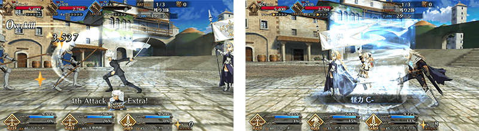
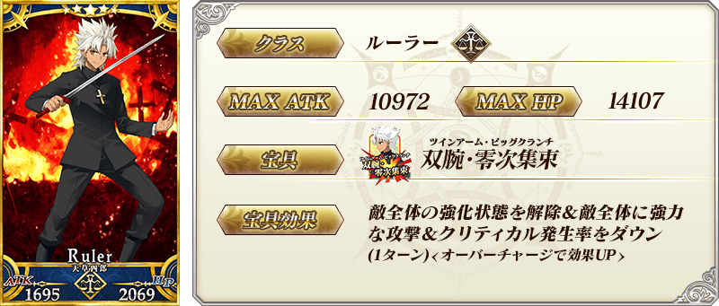
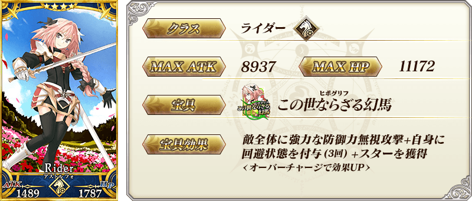
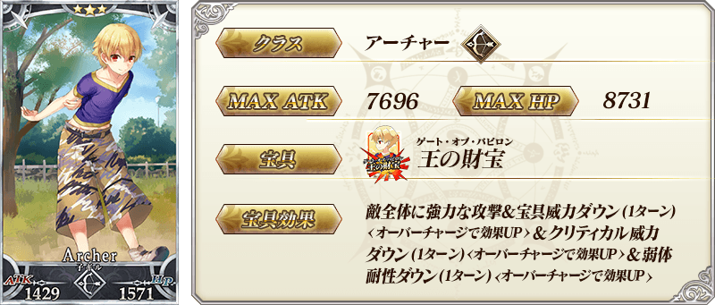

◆「復刻迦勒底男孩收藏2016Pick Up召喚」期間◆
期間：2017年3月8日(三) 16:00～3月22日(三) 13:59
以期間限定舉辦「復刻迦勒底男孩收藏2016Pick Up召喚」！
復刻一部份變更於2016年舉辦迦勒底男孩收藏Pick Up召喚的內容。
「★5(SSR)天草四郎」以期間限定登場！
另外「★4(SR)阿斯托爾福」「★3(R)子吉爾」Pick Up！
‟男孩收藏”顧名思義這次只有男性Servant為召喚對象。
詳情請在聖晶石召喚畫面左下的召喚詳細確認。
※天草四郎在Pick Up期間結束後，不會追加到故事召喚。
另外，有關‟男孩收藏”的概念禮裝「★5(SSR)キス・ユア・ハンド」「★5(SSR)センセイとボク」「★5(SSR)ヴァーサス」「★4(SR)月下の四匹」「★4(SR)グラスフル・スイートタイム」「★4(SR)ノイジー・オブセッション」「★3(R)サロン・ド・マリー」「★3(R)プリンス・オブ・スレイヤー」以期間限定登場！
※「★3(R)サロン・ド・マリー」「★3(R)プリンス・オブ・スレイヤー」在Pick Up期間中，也能在友情點數召喚獲得。
Pick Up期間中，期間限定Servant、Pick Up Servant、期間限定概念禮裝的出現機率提升！
10次召喚中確定1張★4(SR)以上和確定1位★3(R)以上的Servant！
※確定★4(SR)以上包含Servant和概念禮裝。
※所謂「出現機率提升」意指比同稀有度的Servant及概念禮裝出現機率更高的設定。
在達文西工房的「稀有稜鏡交換」，追加交換道具。
◆追加時間◆
2017年3月8日(三) 16:00～
◆追加道具◆
「迦勒底男孩收藏2016」限定「天草四郎體験關卡」開放

※開發中畫面。








 |
★★★★★SSR キス・ユア・ハンド ATK 500(最大:2000) HP 0 技能 自身的Arts卡的性能提升10%＆Buster卡的性能提升10%＆Quick卡的性能提升10% |
 |
★★★★★SSR センセイとボク ATK 0 HP 750(最大:3000) 技能 自身的NP以50%累積狀態開始戰鬥＆星星集中度提升300% |
 |
★★★★★SSR ヴァーサス ATK 250(最大:1000) HP 400(最大:1600) 技能 對自身賦予〔神性〕80%特攻狀態(3回合)＆賦予〔神性〕40%特防狀態(3回合) |
 |
★★★★SR 月下の四匹 ATK 400(最大:1500) HP 0 技能 自身的NP獲得量提升12%＆星星發生率提升12%＆賦予每回合HP200回復狀態 |
 |
★★★★SR グラスフル・スイートタイム ATK 200(最大:750) HP 320(最大:1200) 技能 對自身賦予必中狀態＆賦予傷害加成400狀態＆賦予傷害減免200狀態 |
 |
★★★★SR ノイジー・オブセッション ATK 400(最大:1500) HP 0 技能 自身的Critical威力提升15%＆寶具威力提升15%＆魅惑賦予成功率提升12% |
 |
★★★R サロン・ド・マリー ATK 0 HP 300(最大:1500) 技能 對自身賦予迴避狀態(1次)＆HP回復量提升5%＆弱體賦予成功率提升3% |
 |
★★★R プリンス・オブ・スレイヤー ATK 100(最大:500) HP 160(最大:800) 技能 對自身賦予每回合星星1個獲得狀態＆賦予〔龍〕8%特攻狀態 |

為了記念「復刻:迦勒底男孩收藏2016」，舉辦能從期間限定概念禮裝中選出喜歡的1張的期間限定概念禮裝贈送宣傳活動。
詳情請從下列橫幅或此處確認。